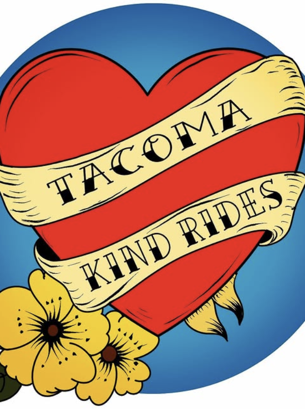

Tacoma Kind Rides (TKR) believes that everyone deserves the dignity of a warm meal and that we, as Tacomans, have an obligatioon to be kind to our unhoused neighbors. On the last Saturday of every month -- we prepare breakfast burritos and hit the streets on our bikes.
Founded in 2020 by Abraham Ojeda as a bike outreach designed to provide food during the Thanksgiving and Christmas holidays, a small group of dedicated volunteers have since turned Tacoma Kind Rides into a monthly happening that seeks to not only distribute a hot meal, but also hygiene kits and other necessities to help with basic needs.
It's a small way to show kindness and build community.